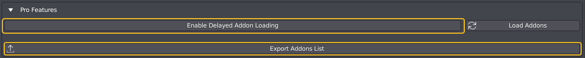
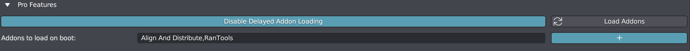
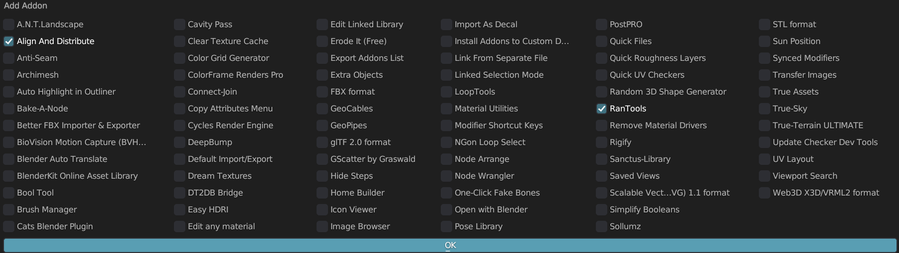
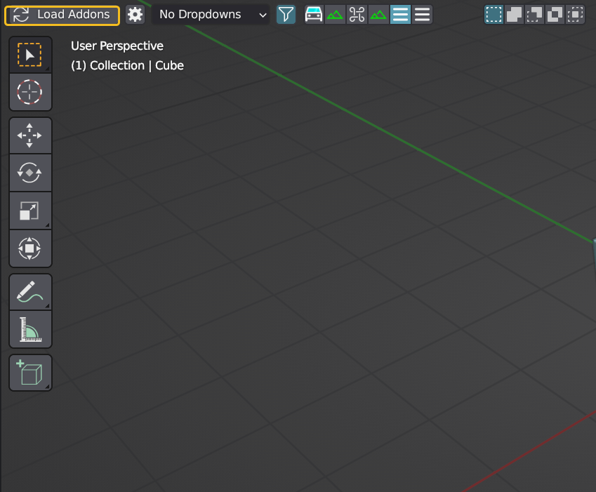
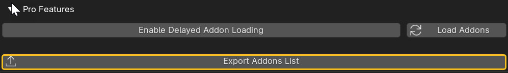

Pro Features
Discover the latest Pro features by navigating to the addon preferences.

Using Delayed Addon Loading
If Blender is installed on your main drive (usually C), follow these steps to enable Delayed Addon Loading:
Start Blender with Administrator rights (Right-click > Run as Administrator).
In addon preferences, scroll down to locate the Pro Features section.
Enable ‘Delayed Addon Loading.’
A new field will appear below it. Press the ‘+’ to add the add-ons you want to load on boot. A popup window will display a list of currently enabled addons. Select the ones you want to load on boot and click OK. Leave it empty if you only want to load inbuilt add-ons (and Clean Panels, of course) on boot.


Once done, the next time you start Blender, it will load much faster, with only the selected addons loaded.
To load your other addons, press the ‘Load Addons’ button in the viewport.

Important
If you update your Blender version, you will need to click the enable button again.
Disabling Delayed Addon Loading
Start Blender with admin rights as described above. Press the button again (it should say “Disable Delayed loading of addons’ this time since it’s already enabled). Restart Blender.
Export Addons List

If you would like to export a list of all your enabled as well as disabled addons, you can use this function.
Click this button.
Type in a name for the exported list.
Select the type on the right side (text or pdf).
Note: Exporting as a pdf requires an external Python library to be downloaded. So you might have to start Blender with admin rights to use it (if Blender is installed in the main drive).